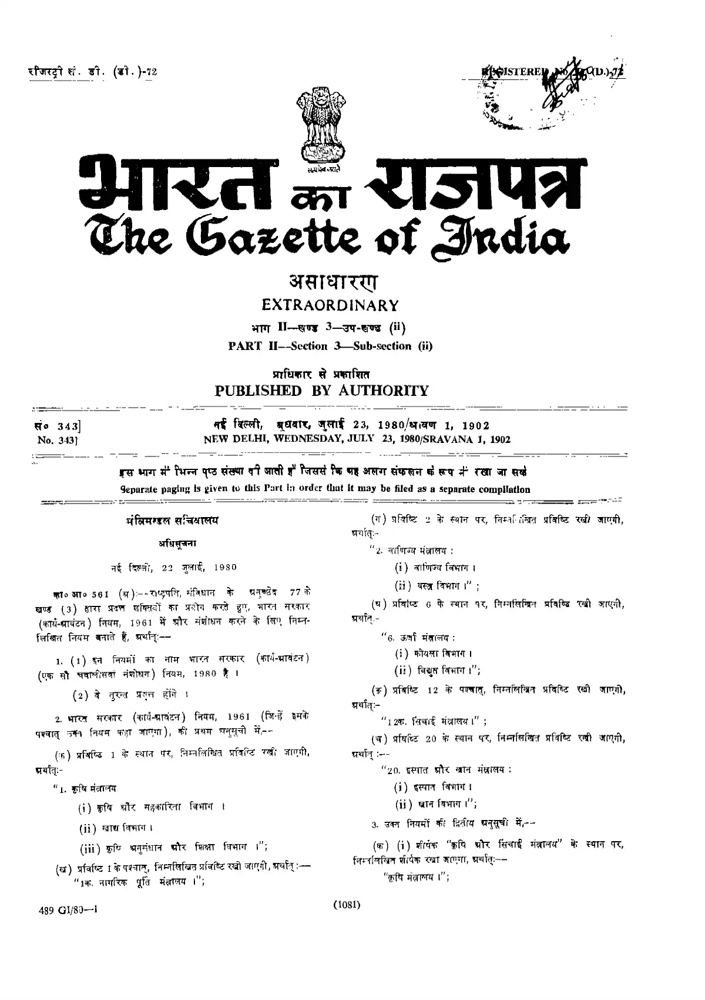
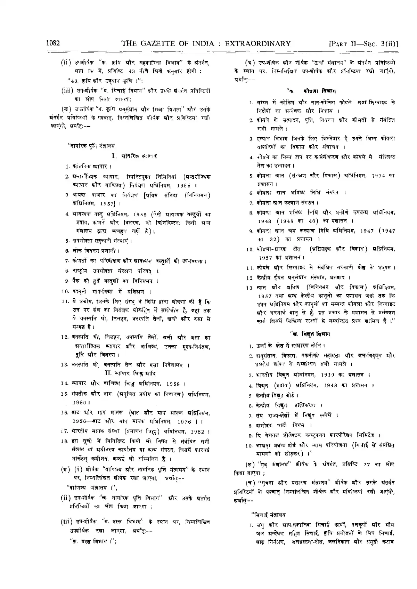
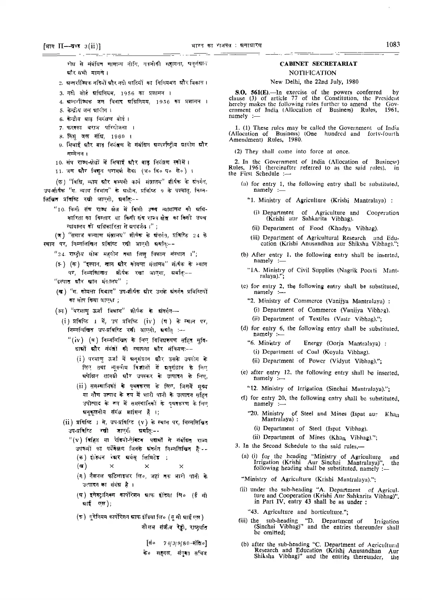
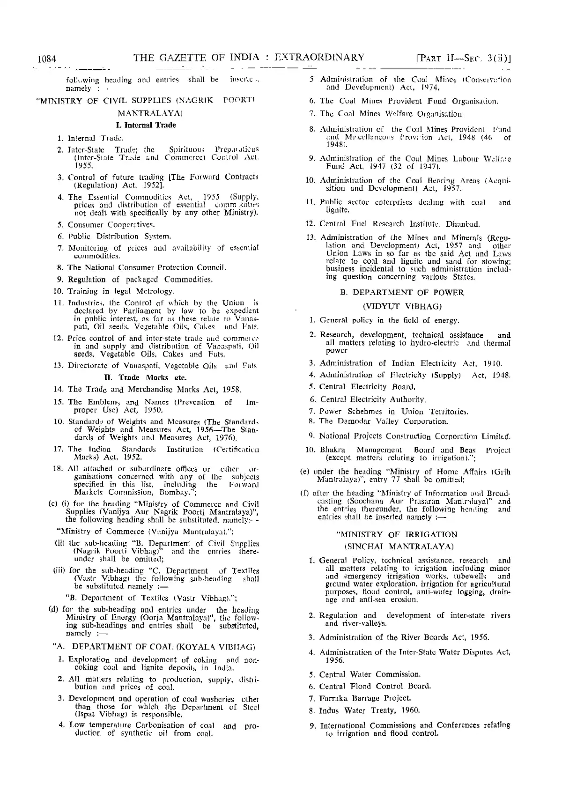
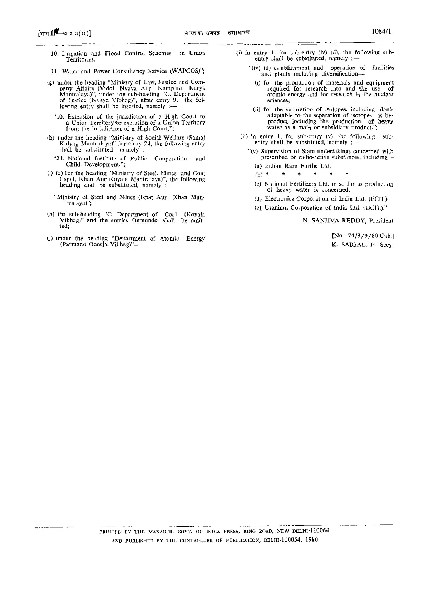

Amendment #144 (S.O. 561(E), 1980)
22 changes: 6 to the First Schedule, 16 to the Second Schedule. 22 applied
What it did to the ministries
- splitMinistry of Commerce and Civil Supplies splits into Ministry of Commerce (57) and Ministry of Civil Supplies (18) change 2, 3, 11, 12, 13 · histories: Commerce and Civil Supplies, Commerce and Supply, Food and Civil Supplies
- spun offMinistry of Irrigation is separated from Ministry of Agriculture and Irrigation (10 subjects) change 1, 2, 5, 7, 8, 9 · histories: Agriculture, Irrigation
- moved12 subjects move from Ministry of Steel, Mines and Coal to Ministry of Energy change 4, 6, 14, 19, 20 · histories: Steel and Mines, Energy
- renamedMinistry of Energy Department of Power is renamed Ministry of Energy change 4, 14 · histories: Energy
- renamedMinistry of Agriculture and Irrigation is renamed Ministry of Agriculture change 1, 2, 7, 8, 9, 10 · histories: Agriculture
- renamedMinistry of Steel, Mines and Coal is renamed Ministry of Steel and Mines change 6, 19, 20 · histories: Steel and Mines
The order, page by page
Page 1 of 6

Page 2 of 6

Page 3 of 6

12345678910Schedule 1 › entry 1
- 1. Ministry of Agriculture
- i. Department of Agriculture and Cooperation
- ii. Department of Food
- iii. Department of Agricultural Research and Education
applied at schedule 1 › ministry 1 in the Rules after #144
after Schedule 1 › entry 1
- 1A. Ministry of Civil Supplies
applied at schedule 1 › ministry 1A in the Rules after #144
Schedule 1 › entry 2
- 2. Ministry of Commerce
- i. Department of Commerce
- ii. Department of Textiles
applied at schedule 1 › ministry 2 in the Rules after #144
Schedule 1 › entry 6
- 6. Ministry of Energy
- i. Department of Coal
- ii. Department of Power
applied at schedule 1 › ministry 6 in the Rules after #144
after Schedule 1 › entry 12
- 12. Ministry of Irrigation
applied at schedule 1 › ministry 12 in the Rules after #144
Schedule 1 › entry 20
- 20. Ministry of Steel and Mines
- i. Department of Steel
- ii. Department of Mines
applied at schedule 1 › ministry 20 in the Rules after #144
Schedule 2 › Ministry of Agriculture and Irrigation
- Ministry of Agriculture
applied at schedule 2 › ministry Ministry of Agriculture in the Rules after #144
Schedule 2 › Ministry of Agriculture › Department of Agricul ture and Cooperation › Part IV › entry 43
- 43. Agriculture and horticulture.
applied at schedule 2 › ministry Ministry of Agriculture › department A › part IV › entry 43 in the Rules after #144
Schedule 2 › Ministry of Agriculture › Department of Irrigation
applied at schedule 2 › ministry Ministry of Agriculture › department E in the Rules after #144
after Schedule 2 › Ministry of Agriculture › Department of Agricultural Research and Education
- MINISTRY OF CIVIL SUPPLIES
- I. Internal Trade
- 1. Internal Trade.
- 2. Inter-State Trade; the Spirituous Preparations. (Inter-State Trade and Commerce) Control Act.
- 1955.
- 3. Control of future trading [The Forward Contracts (Regulation) Act, 1952].
and 16 more
- 4. The Essential Commoditics Act, 1955 (Supply prices and distribution of essential commodities not dealt with specifically by any other Ministry).
- 5. Consumer Cooperatives.
- 6. Public Distribution System.
- 7. Monitoring of prices and availability of essential commodities.
- 8. The National Consumer Protection Council
- 9. Regulation of packaged Commodities.
- 10. Training in legal Metrology.
- 11. Industries, the Control of which by the Union is declared by Parliament by law to be expedient in public interest, as far as these relate to Vanaspati, Oil seeds. Vegetable Oils, Cahes and Fats.
- 12. Price control of and inter-state trade and commerce in and supply and distribution of Vanaspati, Oil seeds, Vegetable Oils, Cakes and Fats.
- 13. Directorate of Vanaspati, Vegetable Oils and Fats
- II. Trade Marks etc.
- 14. The Trade and Merchandise Marks Act, 1958.
- 15. The Emblems and Names (Prevention of Improper Use) Act, 1950.
- 10. Standards of Weights and Measures (The Standards of Weights and Measures Act, 1956-The Standards of Weights and Measures Act, 1976).
- 17. The Indian Standards Institution (Certification Marks) Act, 1952.
- 18. All attached or subordinate offices or other organisations concerned with any of the subjects specified in this list, including the Forward Markets Commission, Bombay.
applied at schedule 2 › ministry Ministry of Agriculture › department D in the Rules after #144
states inferred after its ministry
Page 4 of 6

111213141516Schedule 2 › Ministry of Commerce and Civil Supplies
- Ministry of Commerce
applied at schedule 2 › ministry Ministry of Commerce in the Rules after #144
Schedule 2 › Ministry of Commerce › Department of Civil Supplies
applied at schedule 2 › ministry Ministry of Commerce › department B in the Rules after #144
Schedule 2 › Ministry of Commerce › Department of Textiles
- B. Department of Textiles
applied at schedule 2 › ministry Ministry of Commerce › department B in the Rules after #144
Schedule 2 › Ministry of Energy
- A. DEPARTMENT OF COAL
- 1. Exploration and development of coking and noncoking coal and lignite deposits in India.
- 2. All matters relating to production, supply, distribution and prices of coal.
- 3. Development and operation of coal washeries other than those for which the Department of Steel (Ispat Vibhag) is responsible.
- 4. Low temperature Carbonisation of coal and production of synthetic oil from coal.
- 5. Administration of the Coal Mines (Conservation and Development) Act, 1974.
and 19 more
- 6. The Coal Mines Provident Fund Organisation.
- 7. The Coal Mines Welfare Organisation.
- 8. Administration of the Coal Mines Provident Fund and Miscellaneous (rovirion Act, 1948 (46 of 1948).
- 9. Administration of the Coal Mines Labour Welfare Fund Act, 1947 (32 of 1947).
- 10. Administration of the Coal Bearing Areas (Acquisition und Development) Act, 1957.
- 11. Public sector enterprises dealing with coal and lignite.
- 12. Central Fucl Research Institute, Dhanbad.
- 13. Administration of the Mines and Minerals (Regulation and Development) Act, 1957 and other Union Laws in so far as the said Act and Laws relate to coal and lignite and sand for stowing business incidental to such administration includ ing question concerning various States.
- B. DEPARTMENT OF POWER
- 1. General policy in the field of energy.
- 2. Research, development, technical assistance and all matters relating to hydio-electric and thermal power
- 3. Administration of Indian Electricity Act, 1910.
- 4. Administration of Electricity (Supply) Act, 1948.
- 5. Central Electricity Board.
- 6. Central Electricity Authority.
- 7. Power Schehmes in Union Territories.
- 8. The Damodar Valley Corporation.
- 9. National Projects Construction Corporation Limited.
- 10. Bhakra Management Board and Beas Project (except matters relating to irrigation).
applied at schedule 2 › ministry MINISTRY OF ENERGY (0ORJA MANTRALAYA) in the Rules after #144
Schedule 2 › Ministry of Home Affairs › entry 77
applied at schedule 2 › ministry MINISTRY OF HOME AFFAIRS › part I › group_heading The following subjects which are relatable to… in the Rules after #144
after Schedule 2 › Ministry of Information and Broad- casting
- MINISTRY OF IRRIGATION
- 1. General Policy, technical assistance, research and all matters relating to irrigation including minor and emergency irrigation works, tubewell and ground water exploration, irrigation for agricultural purposes, flood control, anti-water logging, drainage and anti-sea erosion.
- 2. Regulation and development of inter-state rivers and river-valleys.
- 3. Administration of the River Boards Act, 1956.
- 4. Administration of the Inter-State Water Disputes Act
- 1956.
and 7 more
- 5. Central Water Commission.
- 6. Central Flood Control Board.
- 7. Farraka Barrage Project.
- 8. Indus Water Treaty, 1960.
- 9. International Commissions and Conferences relating to irrigation and flood control. ----
- 10. Irrigation and Flood Control Schemes in Union Territories.
- 11. Water and Power Consultancy Service (WAPCOS)
applied at schedule 2 › ministry MINISTRY OF IRRIGATION in the Rules after #144
read page break
Page 5 of 6

171819202122after Schedule 2 › Ministry of Law, Justice and Com- pany Affairs › Department of Justice › entry 9
- 10. Extension of the jurisdiction of a High Court to a Union Territory or exclusion of a Union Territory from the jurisdiction of a High Court.
applied at schedule 2 › ministry MINISTRY OF LAW. JUSTICE AND COMPANY AFFAIRS › department C › entry 10 in the Rules after #144
Schedule 2 › Ministry of Social Welfare › entry 24
- 24. National Institute of Public Cooperation and Child Development.
applied at schedule 2 › ministry MINISTRY OF SOCIAL WELFARE › part IV › entry 24 in the Rules after #144
Schedule 2 › Ministry of Steel, Mincs and Coal
- Ministry of Steel and Mines
applied at schedule 2 › ministry Ministry of Steel and Mines in the Rules after #144
states inferred loose
Schedule 2 › Ministry of Steel and Mines › Department of Coal
applied at schedule 2 › ministry Ministry of Steel and Mines › department C in the Rules after #144
Schedule 2 › Department of Atomic Energy › entry 1 › item iv › item d
- iv. (d) establishment and operation of facilities and plants including diversification--
- i. for the production of materials and equipment required for research into and the use of atomic energy and for research in the nuclear sciences
- ii. for the separation of isotopes, including plants adaptable to the separation of isotopes as byproduct including the production of heavy water as a main or subsidiary product.
applied at schedule 2 › ministry DEPARTMENT OF ATOMIC ENERGY › entry 1 › item iv › item d in the Rules after #144
Schedule 2 › Department of Atomic Energy › entry 1 › item v
- v. Supervision of State undertakings concerned with prescribed or radio-active substances, including-
- a. Indian Rare Earths Ltd.
- b. * ** je
- c. National Fertilizers Ltd. in so far as production of heavy water is concerned.
- d. Electronics Corporation of India Ltd. (ECIL)
- c. Uranium Corporation of India Ltd. (UCIL).
applied at schedule 2 › ministry DEPARTMENT OF ATOMIC ENERGY › entry 1 › item v in the Rules after #144
Page 6 of 6
How this document was read
Changes placed by an inference rule
| Change | Rule | Status | What |
|---|---|---|---|
| 19 | loose | accepted | change 19: ministry Ministry of Steel, Mincs and Coal taken for ministry MINISTRY OF STEEL, MINES AND COAL (ISPAT, KHAN AUR KOYALA MANTRA- LAYA), named loosely |
From the Government of India (Allocation of Business) Rules, 1961 and their amendments, as published by the Cabinet Secretariat (cabsec.gov.in), read by orgpedia. The readings of the older scanned gazettes have known gaps.